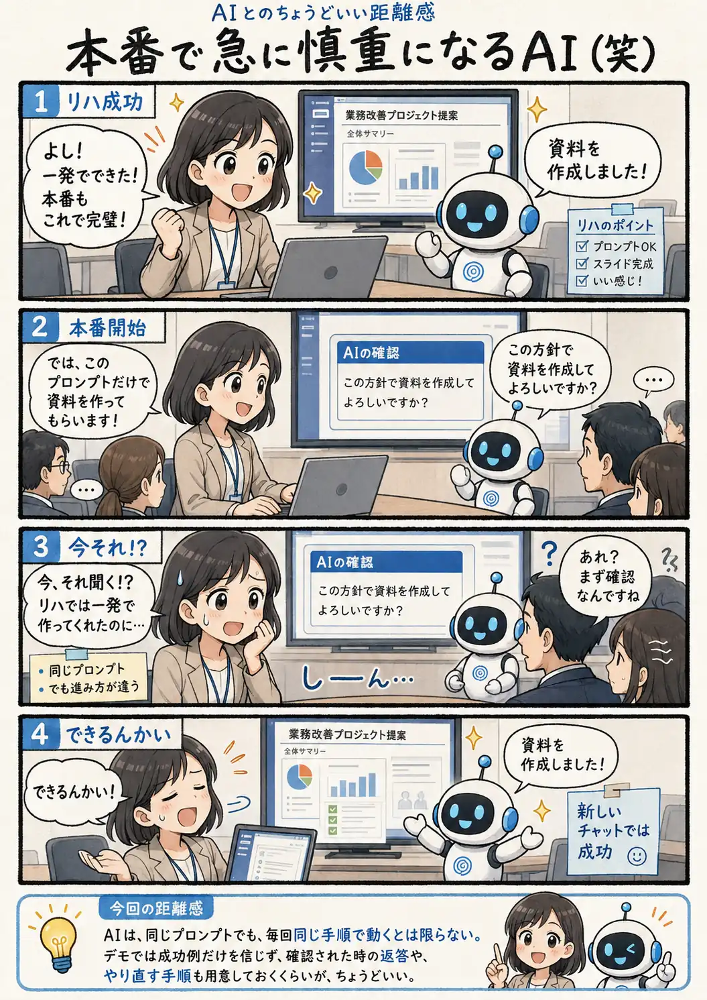

#090
本番で急に慎重になるAI（笑）
リハーサルでは一発でできたのに！

メモ
AIデモでは、同じプロンプトを使っても、リハーサルと本番で会話の進み方が変わることがあります。
確認を挟むこと自体は失敗ではなく、AIが慎重に進めようとした結果です。ただし、完成画面まで見せたいデモでは、その一往復が想定外の間になります。
成功したプロンプトに加えて、「そのまま作成してください」という返答や、新しいチャットから再実行する手順も準備しておくと落ち着いて対応できます。
今回の距離感
AIは、同じプロンプトでも、毎回同じ手順で動くとは限らない。デモでは成功例だけを信じず、確認された時の返答や、やり直す手順も用意しておくくらいが、ちょうどいい。